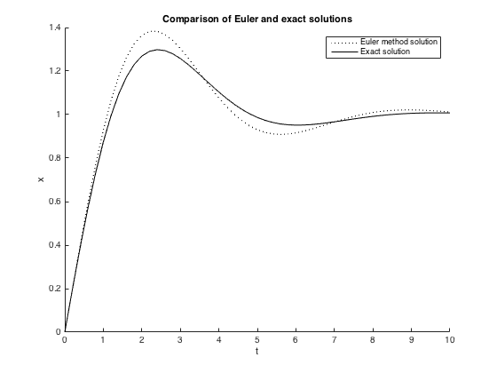

syms x(t) y(t) a b
S = dsolve(diff(x,t) == a + y - (b + 1)*x, diff(y,t) == b*x - y, x(0) == 0, y(0) == 0);
disp(simplify(S.x))
disp(simplify(S.y))
solx = simplify(S.x); soly = simplify(S.y);
Mp = 0.5*(- b - 2 + sqrt(b*(b+4))); Mn = 0.5*(- b - 2 - sqrt(b*(b+4)));
Bp = (a*(1+ Mn))/(Mp - Mn); Bn = (a*(1+ Mp))/(Mn - Mp);
ExactX = Bp*exp(Mp*t) + Bn*exp(Mn*t) + a;
disp(simplify(solx-ExactX))
[Ex, Ey, Et] = Eulersol(1, -1, 50, 0.2);
figure(1); clf(1)
hold on
plot(Et, Ex, 'k:')
title('Comparison of Euler and exact solutions'), xlabel('t'), ylabel('x')
ExactX2 = zeros (1, 50 + 1);
for i = 1:50 + 1
ExactX2(i) = subs(solx, [t, a, b], [Et(i), 1, -1]);
end
plot (Et, ExactX2, 'k')
legend ('Euler method solution', 'Exact solution')
hold off
-(2*a*b*exp(-(t*(b - (b*(b + 4))^(1/2) + 2))/2)*(b + 4) - 4*a*b*(b + 4) + 2*a*b*exp(-(t*(b - (b*(b + 4))^(1/2) + 2))/2)*(b*(b + 4))^(1/2) + 2*a*b*exp(-(t*(b + (b*(b + 4))^(1/2) + 2))/2)*(b + 4) - 2*a*b*exp(-(t*(b + (b*(b + 4))^(1/2) + 2))/2)*(b*(b + 4))^(1/2))/(4*b*(b + 4))
- (2*a*b*exp(-(t*(b - (b*(b + 4))^(1/2) + 2))/2)*(exp((t*(b - (b*(b + 4))^(1/2) + 2))/2) - 1))/(4*b - b*(b*(b + 4))^(1/2) + b^2 - 2*(b*(b + 4))^(1/2)) - (2*a*b*exp(-(t*(b + (b*(b + 4))^(1/2) + 2))/2)*(exp((t*(b + (b*(b + 4))^(1/2) + 2))/2) - 1))/(4*b + b*(b*(b + 4))^(1/2) + b^2 + 2*(b*(b + 4))^(1/2))
0
Columns 1 through 7
0 0.2000 0.4000 0.5920 0.7696 0.9280 1.0639
Columns 8 through 14
1.1756 1.2623 1.3247 1.3641 1.3826 1.3829 1.3678
Columns 15 through 21
1.3404 1.3038 1.2609 1.2144 1.1668 1.1201 1.0761
Columns 22 through 28
1.0361 1.0010 0.9715 0.9479 0.9301 0.9180 0.9111
Columns 29 through 35
0.9089 0.9106 0.9157 0.9233 0.9328 0.9434 0.9546
Columns 36 through 42
0.9658 0.9766 0.9866 0.9956 1.0033 1.0096 1.0145
Columns 43 through 49
1.0181 1.0203 1.0214 1.0215 1.0207 1.0192 1.0171
Columns 50 through 51
1.0148 1.0121
Columns 1 through 7
0 0 -0.0400 -0.1120 -0.2080 -0.3203 -0.4419
Columns 8 through 14
-0.5663 -0.6881 -0.8030 -0.9073 -0.9987 -1.0755 -1.1369
Columns 15 through 21
-1.1831 -1.2146 -1.2324 -1.2381 -1.2334 -1.2200 -1.2001
Columns 22 through 28
-1.1753 -1.1474 -1.1181 -1.0888 -1.0606 -1.0345 -1.0112
Columns 29 through 35
-0.9912 -0.9747 -0.9619 -0.9527 -0.9468 -0.9440 -0.9439
Columns 36 through 42
-0.9460 -0.9500 -0.9553 -0.9616 -0.9684 -0.9753 -0.9822
Columns 43 through 49
-0.9887 -0.9945 -0.9997 -1.0040 -1.0075 -1.0102 -1.0120
Columns 50 through 51
-1.0130 -1.0134
Columns 1 through 7
0 0.2000 0.4000 0.6000 0.8000 1.0000 1.2000
Columns 8 through 14
1.4000 1.6000 1.8000 2.0000 2.2000 2.4000 2.6000
Columns 15 through 21
2.8000 3.0000 3.2000 3.4000 3.6000 3.8000 4.0000
Columns 22 through 28
4.2000 4.4000 4.6000 4.8000 5.0000 5.2000 5.4000
Columns 29 through 35
5.6000 5.8000 6.0000 6.2000 6.4000 6.6000 6.8000
Columns 36 through 42
7.0000 7.2000 7.4000 7.6000 7.8000 8.0000 8.2000
Columns 43 through 49
8.4000 8.6000 8.8000 9.0000 9.2000 9.4000 9.6000
Columns 50 through 51
9.8000 10.0000
